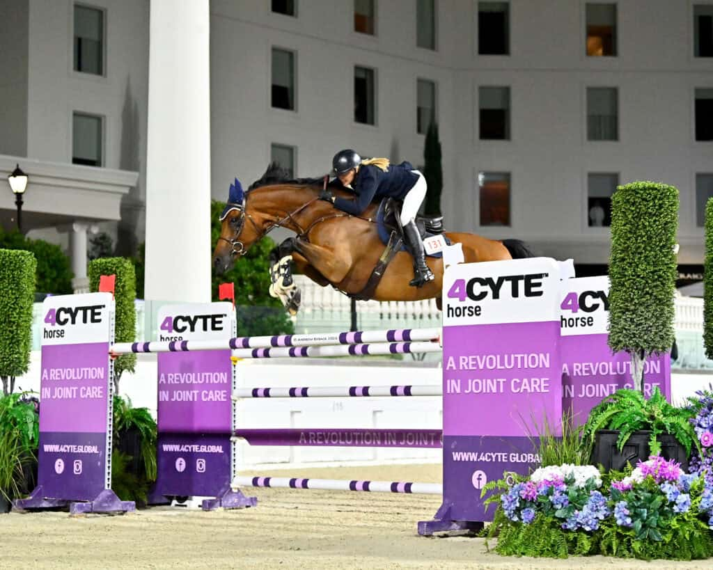

Tracy Fenney conquista el Gran Premio CSI2* de 1,45 m de Ocala con MTM Pablo
La amazona estadounidense firmó un doblete con cero faltas en el World Equestrian Center, donde selló la victoria con un crono de 40,67 segundos en el desempate de la prueba dotada con 82.500 dólares.

Uso editorial
Tracy Fenney y MTM Pablo se impusieron en el Gran Premio CSI2* de 1,45 metros del World Equestrian Center de Ocala, dotado con 82.500 dólares. La amazona estadounidense y el castrado hanoveriano de 13 años firmaron un recorrido impecable en la primera manga y dominaron el desempate con un tiempo de 40,67 segundos, el más rápido de los ocho binomios que accedieron a la definición. De ellos, cinco lograron cero faltas en ambas mangas.
El neozelandés Sharn L. Wordley, afincado en Ocala, terminó segundo con Hagelin, castrado de 14 años propiedad estadounidense, en su primer concurso internacional tras un año de ausencia. Paró el cronómetro en 42,12 segundos. El podio lo completó el estadounidense Wilton Porter sobre Sternmarke 3, castrado de 12 años con el que compite desde hace seis temporadas, con un crono de 43,14 segundos.
La organización del World Equestrian Center ha establecido requisitos sanitarios adicionales para los caballos procedentes de Texas como respuesta a la extensión del gusano barrenador en ese estado. Los ejemplares que lleguen desde Texas deben presentar un certificado de salud veterinario firmado en los tres días previos a la llegada y solo pueden acceder a las instalaciones entre las 8:00 y las 16:00 horas por dos entradas habilitadas.
— Redacción de Hípica al Día